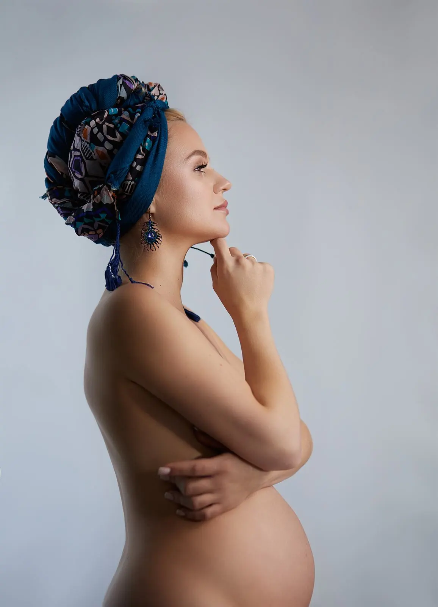

Выбираем настроение
Обсуждаем образ и локацию, которая подходит задуманным кадрам.
Фотограф Анна Финк · Хабаровск
Бережная съёмка о времени ожидания. Можно выбрать мягкий домашний свет, студийный образ или природное пространство — обсудим, что ближе тебе, и подберём подходящее место.

Портфолио
Съёмки могут быть тихими, светлыми или более выразительными. Образ и настроение выбираем вместе.
Как проходит съёмка
Обсуждаем образ и локацию, которая подходит задуманным кадрам.
В течение часа я помогаю с позированием и внимательно слежу за темпом.
В пакет входят 15 фото в детальной ретуши, если требуется, и не менее 20 в лёгкой ретуши.
Стоимость
Один час, помощь с образом и локацией, 15 фото в детальной ретуши при необходимости и не менее 20 фото в лёгкой ретуши.
Аренда студии или другой платной локации оплачивается отдельно. При желании отдельно можно заказать визажиста и стилиста по волосам. Готовые фотографии выдаю через 2–3 недели.
Частые вопросы
Нет. Я помогу подобрать образ и локацию для съёмки.
Пакет включает один час съёмки.
15 фотографий в детальной ретуши при необходимости и не менее 20 в лёгкой ретуши.
Место выбираем под идею: это может быть студия, другое помещение или открытая локация.
Срок выдачи готовых фотографий — 2–3 недели.
Аренда фотостудии или другой платной локации не входит в стоимость съёмки. При желании отдельно можно заказать визажиста и стилиста по волосам.
Бесплатно перенести съёмку можно, если предупредить не позднее чем за 24 часа.
Другие направления
Запись на съёмку
Напиши, какой формат тебе интересен. Мы обсудим настроение, место и детали съёмки в Хабаровске.